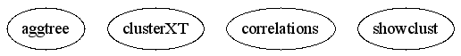

Master index
Index for chronux_2_00\spikesort\graphics
Dependency Graph for chronux_2_00\spikesort\graphics

Generated on Fri 15-Aug-2008 11:35:38 by
m2html
© 2003
 Master index
Master index Master index
Master index